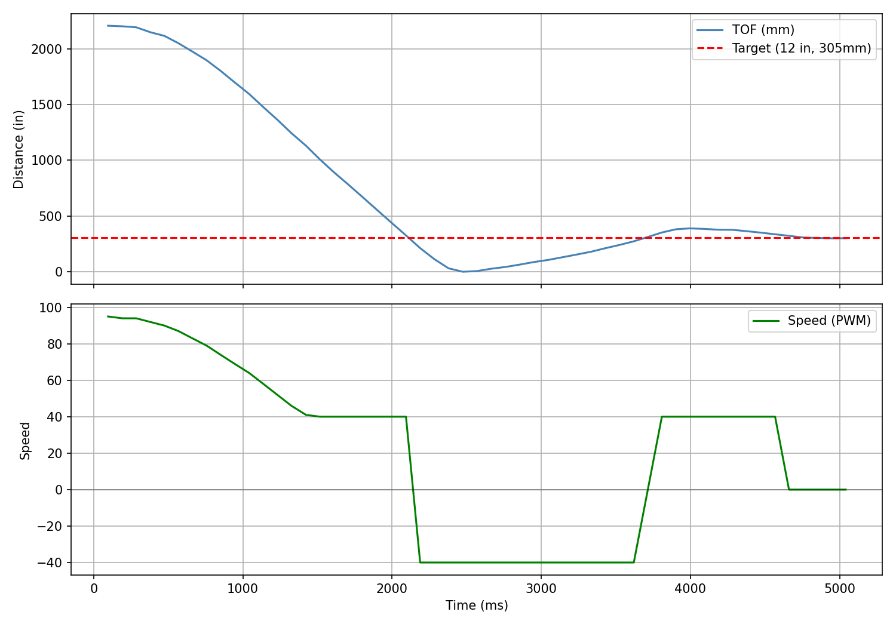
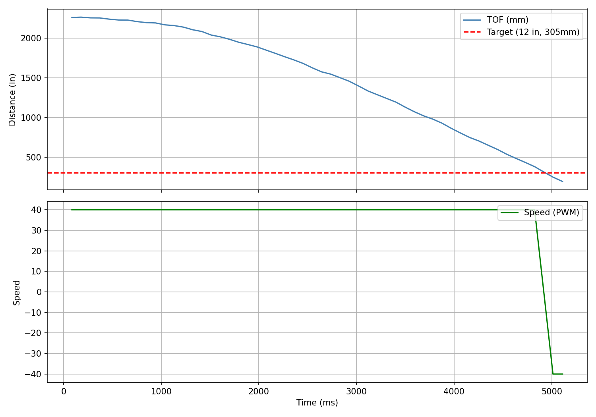
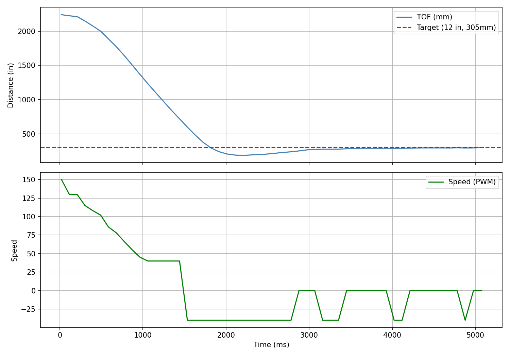
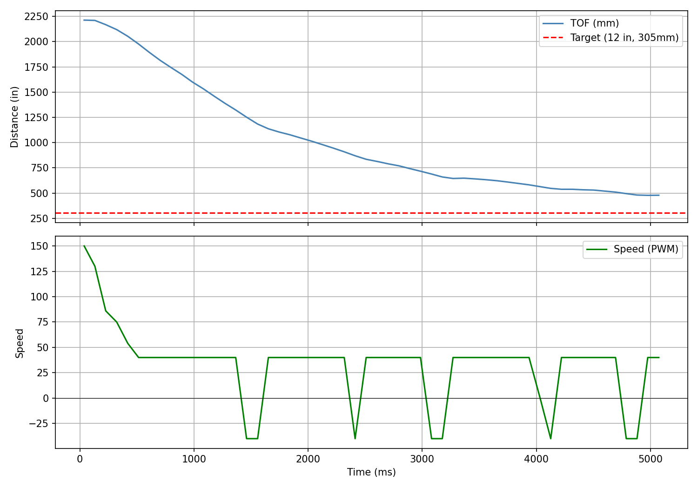
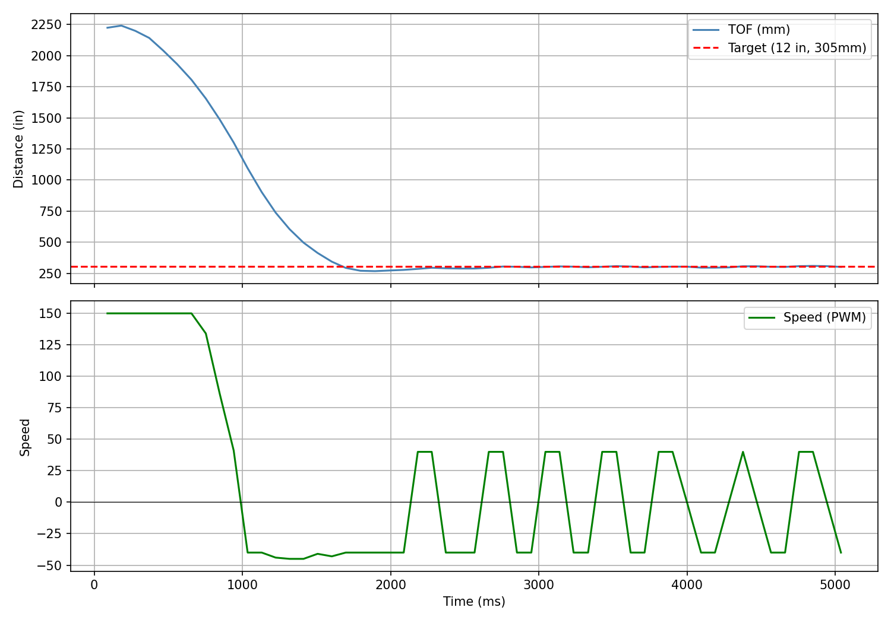
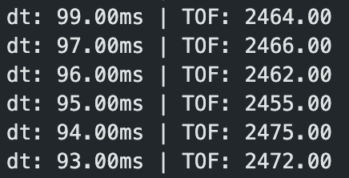
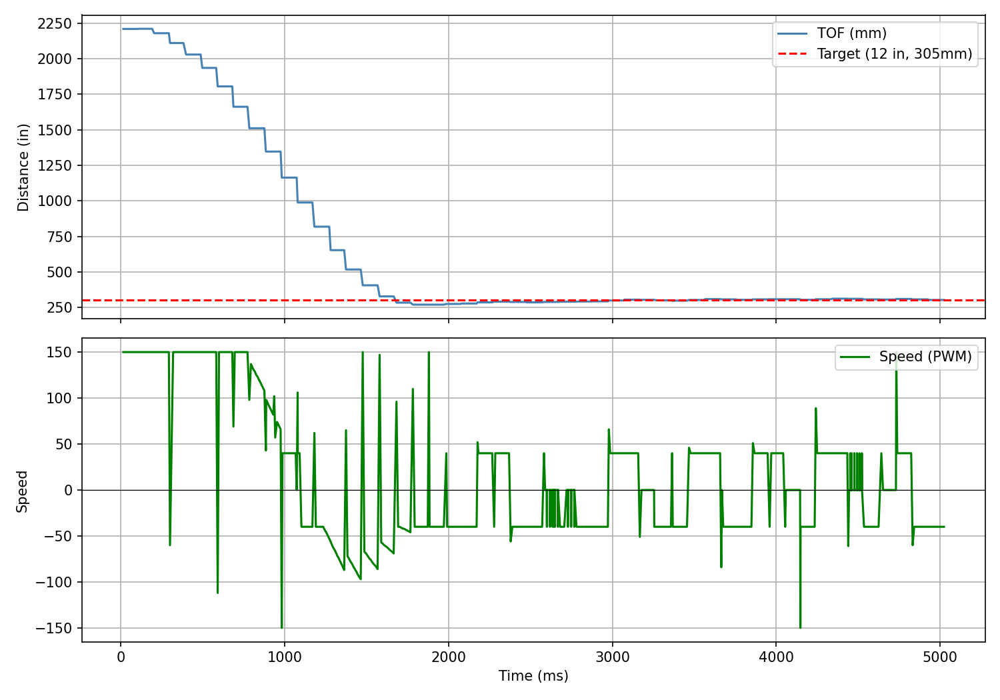

Lab 5: Linear PID Control and Linear Interpolation
Goal: Implement PID control of the robot and speed up data collection.
Prelab
For the control labs, I wanted to set up an efficient pipeline for testing/tuning PID variables. I needed functions to start and stop PID, as well as send over collected PID data (error, motor output). I added the following global variables:
// PID Control
const int PID_DATA_LEN = 2000;
int pid_run_flag = 0;
int pid_data_count = 0;
float K_p = 0.0;
float K_i = 0.0;
float K_d = 0.0;
float pid_target_distance = 0.0;
float pid_time_arr[PID_DATA_LEN];
float pid_tof_arr[PID_DATA_LEN];
float pid_speed_arr[PID_DATA_LEN];
float pid_error_arr[PID_DATA_LEN];
float pid_Kp_arr[PID_DATA_LEN];
float pid_Ki_arr[PID_DATA_LEN];
float pid_Kd_arr[PID_DATA_LEN];
float pid_start_time;
float pid_position_error = 0;
float pid_prev_error = 0;
float pid_integral_term = 0;
float pid_derivative_term = 0;
float pid_output;Later on in the lab, I'll mention additional global variables used for interpolating TOF data. Next, I added three commands for starting and stopping the PID process, and sending collected data over Bluetooth.
START_PID_CONTROL
Receives process variable values for Kp, Ki, and Kd, as well as target distance for the car to stop from the wall. Resets data arrays and necessary PID variables.
case START_PID_CONTROL:
success = robot_cmd.get_next_value(K_p); if (!success) return;
success = robot_cmd.get_next_value(K_i); if (!success) return;
success = robot_cmd.get_next_value(K_d); if (!success) return;
success = robot_cmd.get_next_value(pid_target_distance); if (!success) return;
// reset all state
pid_data_count = 0;
pid_prev_error = 0;
pid_integral_term = 0;
pid_position_error = 0;
pid_derivative_term = 0;
pid_start_time = millis();
pid_last_time = millis();
tofSensor1.startRanging();
pid_run_flag = 1;
Serial.print("PID started. Target: "); Serial.println(pid_target_distance);
break;STOP_PID_CONTROL
Stops the PID control loop by setting the PID flag to 0. Hard stop for the car.
case STOP_PID_CONTROL:
pid_run_flag = 0;
stop();
Serial.println("PID stopped");
break;SEND_PID_DATA
Sends time, TOF, motor output/speed, and PID process variable values over Bluetooth.
void sendPIDDataOverBluetooth() {
Serial.print("Sending "); Serial.print(pid_data_count); Serial.println(" PID samples");
int i = 0;
while (i < pid_data_count) {
tx_estring_value.clear();
tx_estring_value.append(pid_time_arr[i]); tx_estring_value.append(",");
tx_estring_value.append(pid_tof_arr[i]); tx_estring_value.append(",");
tx_estring_value.append(pid_speed_arr[i]); tx_estring_value.append(",");
tx_estring_value.append(pid_error_arr[i]); tx_estring_value.append(",");
tx_estring_value.append(pid_Kp_arr[i]); tx_estring_value.append(",");
tx_estring_value.append(pid_Ki_arr[i]); tx_estring_value.append(",");
tx_estring_value.append(pid_Kd_arr[i]);
tx_characteristic_string.writeValue(tx_estring_value.c_str());
delay(10);
i++;
}
}For my implementation of PID, I wrote a function called runPIDIteration() which runs one PID loop. The PID runs based on the main loop — if the pid_run_flag is set, PID will stay running.
runPIDIteration()
void runPIDIteration() {
// stop if data overflows
if (pid_data_count >= PID_DATA_LEN) {
pid_run_flag = 0;
stop();
return;
}
// fetch TOF reading
tofSensor1.startRanging();
while (!tofSensor1.checkForDataReady()) {}
float distance = tofSensor1.getDistance();
tofSensor1.clearInterrupt();
tofSensor1.stopRanging();
// store time and TOF reading into array
float elapsed = millis() - pid_start_time;
pid_time_arr[pid_data_count] = elapsed;
pid_tof_arr[pid_data_count] = distance;
// run PID algorithm for speed
calculateSpeedWithPID(pid_data_count, K_p, K_i, K_d, elapsed, distance);
pid_data_count++;
}The last function is calculateSpeedWithPID, which implements the PID algorithm.
calculateSpeedWithPID()
void calculateSpeedWithPID(int arr_index, float K_p, float K_i, float K_d,
float elapsed_time, float tof_reading) {
float pid_current_time = millis();
float dt = (pid_current_time - pid_last_time) / 1000.0;
if (dt <= 0) dt = 0.001;
// Proportional term
pid_position_error = tof_reading - pid_target_distance;
// Integral term
pid_integral_term += pid_position_error * dt;
pid_integral_term = constrain(pid_integral_term, -500.0, 500.0);
// Derivative term
pid_derivative_term = (pid_position_error - pid_prev_error) / dt;
float P_term = K_p * pid_position_error;
float I_term = K_i * pid_integral_term;
float D_term = K_d * pid_derivative_term;
int pid_speed = (int)(P_term + I_term + D_term);
// Stop if speed is negligible
if (abs(pid_speed) < 1) {
stop();
} else {
// Clamp max
if (pid_speed > maxSpeed) pid_speed = maxSpeed;
if (pid_speed < -maxSpeed) pid_speed = -maxSpeed;
// Enforce minimum speed / deadband
if (pid_speed > 0 && pid_speed < minSpeed) pid_speed = minSpeed;
if (pid_speed < 0 && pid_speed > -minSpeed) pid_speed = -minSpeed;
if (pid_speed > 0) {
forward(pid_speed);
} else {
backward(-1 * pid_speed);
}
}
pid_prev_error = pid_position_error;
pid_last_time = pid_current_time;
pid_output = pid_speed;
pid_speed_arr[arr_index] = pid_speed;
pid_error_arr[arr_index] = pid_position_error;
pid_Kp_arr[arr_index] = P_term;
pid_Ki_arr[arr_index] = I_term;
pid_Kd_arr[arr_index] = D_term;
}Now I have the foundation for running PID control for a fixed amount of time and receiving PID data over Bluetooth. I can also easily tune my PID process variables since I'm sending their values over Bluetooth. Here is an example from the Python side where I run PID over 5 seconds.
filename = 'pid_data.csv'
def pid_handler(sender_uuid, data):
datapoint = data.decode("utf-8").strip()
parts = datapoint.split(",")
t, tof, speed, error, kp, ki, kd = parts[0], parts[1], parts[2], parts[3], parts[4], parts[5], parts[6]
with open(filename, "a+") as f:
f.seek(0)
if f.read(1) == "":
f.write("Time,TOF,Speed,Error,Kp,Ki,Kd\n")
f.write(f"{t},{tof},{speed},{error},{kp},{ki},{kd}\n")
kp = 0.05
ki = 0.0
kd = 0.0
target_distance_inches = 12
ble.send_command(CMD.START_PID_CONTROL, f"{kp}|{ki}|{kd}|{target_distance_inches * 25.4}")
time.sleep(5)
ble.send_command(CMD.STOP_PID_CONTROL, "")
time.sleep(0.5)
# fetch PID data
ble.start_notify(ble.uuid['RX_STRING'], pid_handler)
ble.send_command(CMD.SEND_PID_DATA, "")Position Control
The goal is to use PID to drive the robot as fast as possible and stop exactly 1 ft away from a wall. The robot should be able to do this in changing conditions, such as different starting positions and floor surfaces, and should also respond to external perturbations.
For initial testing, I limited the max speed of the car to prevent collisions that could break parts.
const int minSpeed = 40;
const int maxSpeed = 150;The TOF sensor is set to long mode (range 2–4 m). Starting ~2 m from the target gives an initial error of ~1500 mm, which suggests a minimum Kp of:
Min Kp estimate: 80 / 1500 ≈ 0.05
Below are two tests to get a sense of how changing Kp affects the robot's performance.
Kp = 0.05

Kp = 0.02

As we can see in the videos, when Kp is 0.05, the car will overshoot and hit the wall. At 0.02, the car moves too slowly and barely reaches the target in the 5 second PID session. To prevent overshooting and have the car stop smoother closer to the wall, I added in derivative control. The derivative term looks at how fast the error is changing and applies a corrective force, or in this case, a damping force which will slow the car down faster. This will prevent overshooting.
- Kd too low → overshoots
- Kd tuned well → smooth stop
- Kd too high → over-sensitive to TOF noise, choppy, stops too soon
Using Kp = 0.07, I tested various Kd values.
Kd = 0.02
The dampening was pretty good and prevented the car from hitting the wall. I still think the Kd can be higher.

Kd = 0.1
The dampening was too much and stalled the car well before its target destination.

Optimal Tuning — Kp = 0.18, Kd = 0.07
After careful tuning I raised Kp to increase speed while keeping Kd high enough to prevent overshoot. This achieved a fast drive with a precise stop at the target distance.

Extrapolation
For this part of the lab, I wanted to speed up the PID loop, which is limited by the TOF sensor. Because I was waiting for new TOF values each iteration, the PID loop ran at the same frequency as the sensor. I added a debug print to measure the interval between readings:
// print time between readings
Serial.print("dt: "); Serial.print(elapsed - pid_time_arr[max(0, pid_data_count - 1)]);
Serial.print("ms | TOF: "); Serial.println(last_tof_distance);
The TOF returns new data about every ~95 ms, or ~10.5 Hz. Rather than waiting for new data each iteration, I calculate PID even when no new data is available, using the most recent datapoint stored in a global variable last_tof_distance. With that change, a 5-second run yielded 686 datapoints — a frequency of 137 Hz, nearly a 10× increase.
Finally, instead of simply replaying the last datapoint, I implemented linear extrapolation. Each time a new TOF reading arrives, the slope between the two most recent readings is computed and used to project the distance forward in time. I added three global variables:
float last_tof_time = 0.0;
float prev_tof_distance = 0.0;
float prev_tof_time = 0.0;And here is the extrapolation logic:
float extrapolated_distance = last_tof_distance;
if (prev_tof_time > 0 && last_tof_time != prev_tof_time) {
float slope = (last_tof_distance - prev_tof_distance) / (last_tof_time - prev_tof_time);
float dt_since_last = current_time - last_tof_time;
extrapolated_distance = last_tof_distance + slope * dt_since_last;
}With all these changes, I did another tuning session. After some time I achieved the following result:

I didn't see a dramatic difference in driving performance between the blocking-TOF and extrapolated implementations, but the jump from ~10 Hz to ~137 Hz in PID loop frequency is significant and will matter for future labs.
Collaboration
For this lab, I referenced Aidan Derocher's and Lucca Correia's websites. I used their sites to understand how to store PID data in arrays and how to structure the PID loop. I drew inspiration from Lucca for my START_PID_CONTROL and STOP_PID_CONTROL commands, as well as for speed clamping and deadband logic in my PID calculation. I also consulted Claude for tips on my PID implementation, such as which global variables I would need for the interpolation aspect. During debugging, I ran into naming issues and variable type issues that were silently truncating sensor measurements and corrupting PID runs — Claude helped me identify these errors. Finally, I provided all my text, images, and videos to Claude to style this website.